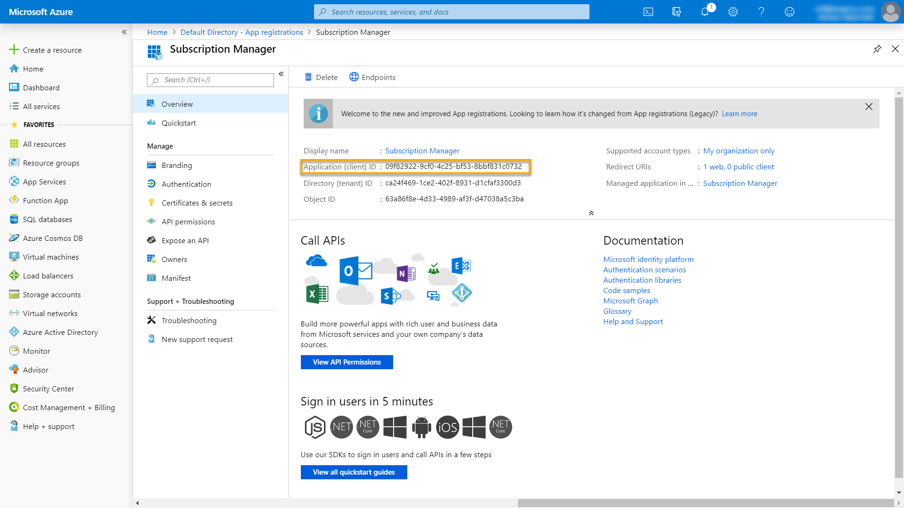
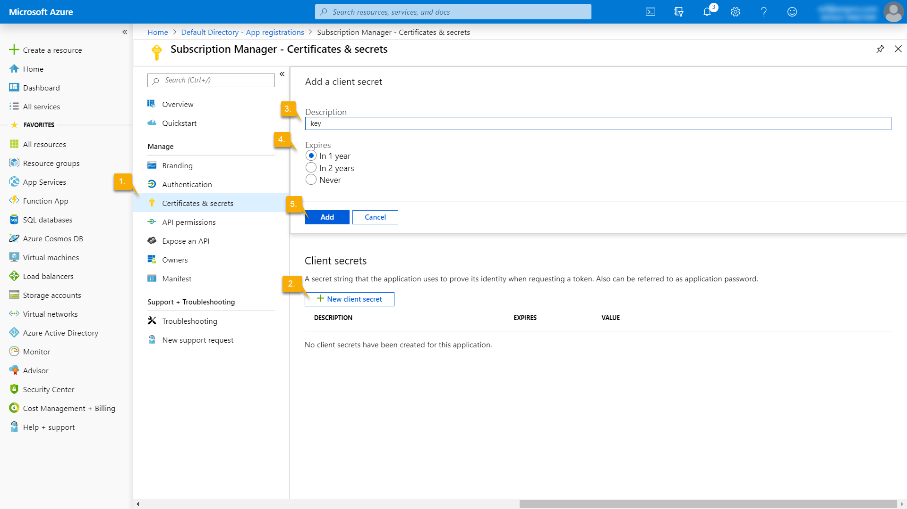
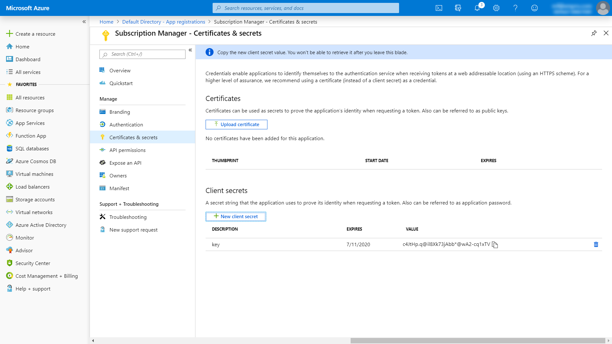
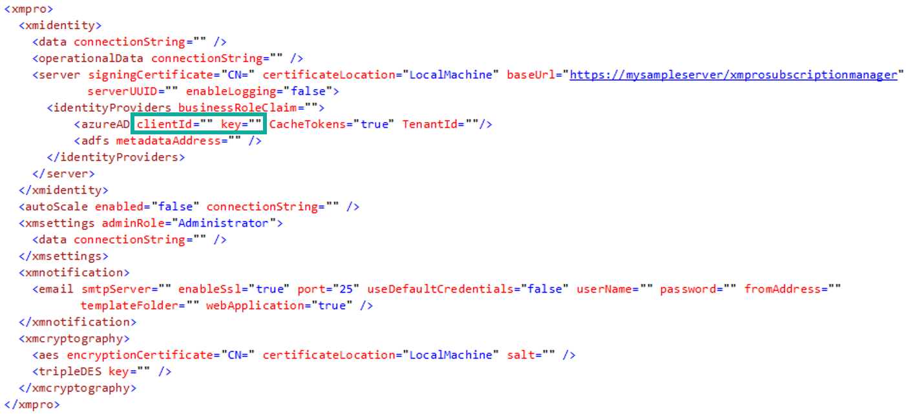
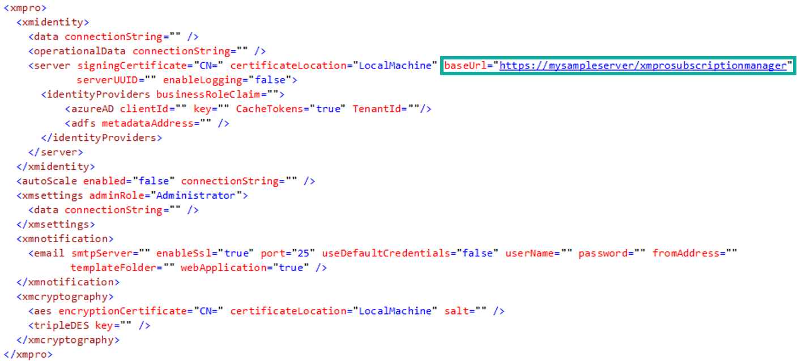
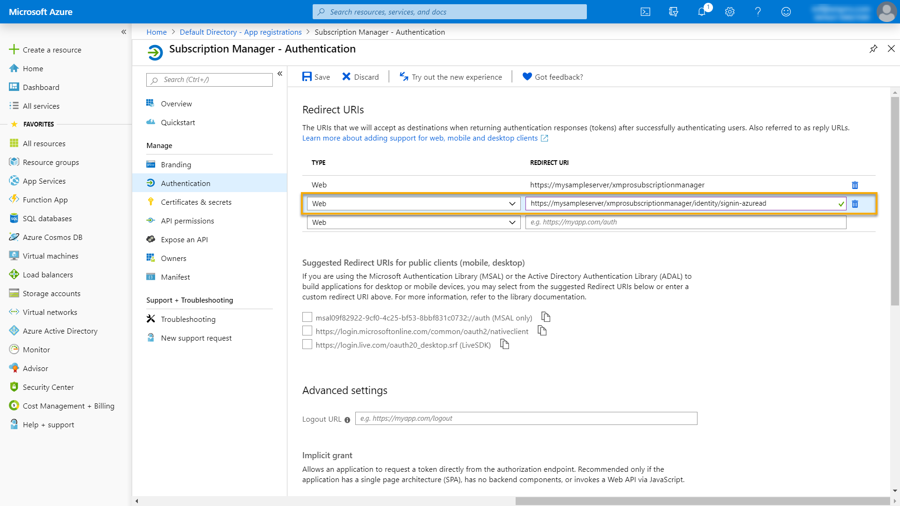
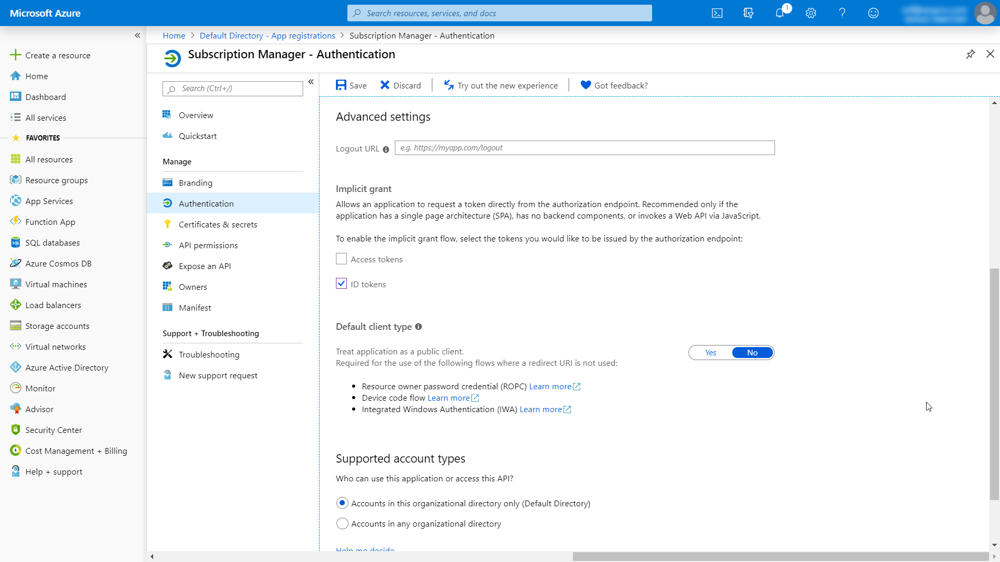
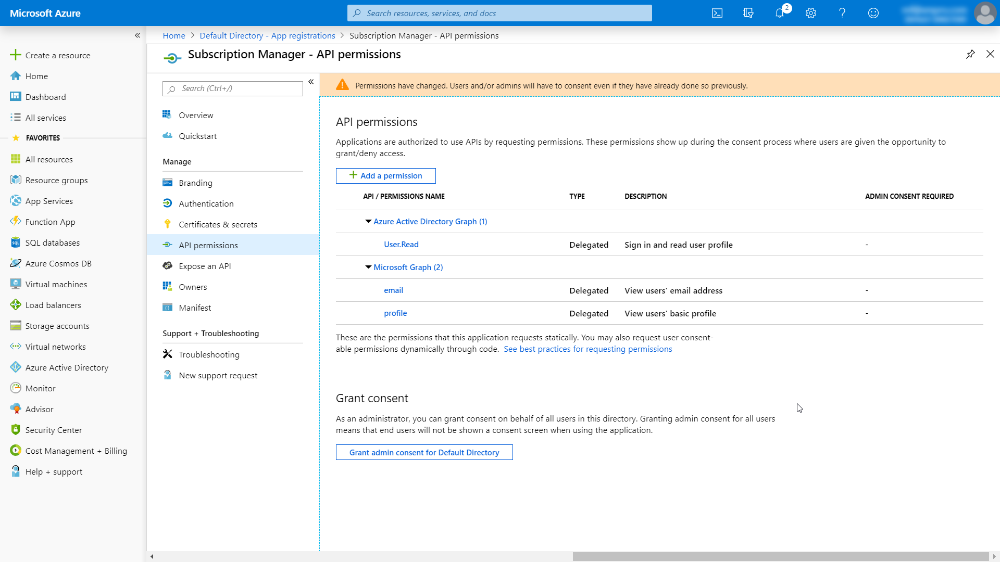
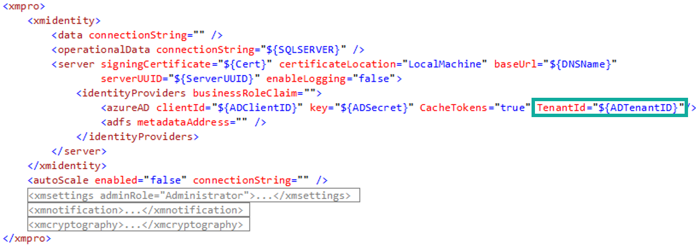

SSO - Azure AD
In this article, we will look at how to set up Azure AD so that it can be used as an external identity provider for Subscription Manager, allowing single sign-on capability between Azure AD and Subscription Manager.
Register application
Start by registering a new application in Azure AD by following these instructions.
Copy application (client) ID
Immediately after registering your application, an overview page will be opened for the new application. A unique application (client) ID would have been assigned to the application.
Warning
Copy this ID. You will add it in Subscription Manager's web.config file shortly.

Credentials
Next, create a secret for Subscription Manager. Follow the steps below:
- On the left, click on Certificates & secrets.
- Click on New client secret.
- Add a description for your new client secret.
- Choose a duration.
- Click Add.


Note
Both the application client ID and the secret need to be added to Subscription Manager's web.config file.
- Navigate to the IIS location where Subscription Manager has been installed.
- Open the file web.config file.
- Scroll down to the "xmpro" section.
Note
This section might have to be decrypted, for which you can find instructions here.
- Add the application (client) ID that you copied earlier to the
clientIdattribute of theazureADelement - Copy the secret and add it to the web.config.

Note
If you're using the Azure key store to manage app settings and secrets, use the ${} syntax for the azureAD attributes in the web.config, similar to:
<azureAD clientId="${ADClientID}" key="${ADSecret}" />
- And define the following secrets in the key store:
| Name | Value |
|---|---|
| ADClientID | Application Id |
| ADSecret | Application Secret |
Authentication
- Copy the baseUrl value in the web.config - you will need it later in this guide.

- In Azure Portal, click on Authentication and add the following URL in the space provided:
The URL where Subscription Manager is hosted (base URL, which you have just copied), ending in "identity/signin-azuread"
Example: https://mysampleserver/xmprosubscriptionmanager/identity/signin-azuread

- On the Authentication page, scroll down until you see "Advanced Settings".
- Select "ID tokens" and click Save.

API permissions
- Select API permissions on the left-hand menu.
- Make sure the permissions set on the application correspond to the image below.

Sync Azure AD Role to SM's Business Role
This optional functionality allows a user's Business Role to be synced to a corresponding Azure AD Claim each time they log in.
- Get the desired user claim name from Azure AD.
- Navigate to the IIS location where Subscription Manager has been installed.
- Open the web.config file.
- Add the claim name to the "businessRoleClaim" attribute in the "identityProviders" tag.
<identityProviders businessRoleClaim="PUT THE CLAIM NAME HERE"> - Save the file and restart the Subscription Manager service.
See the Sync Business Roles from Azure AD article for more information.
Guest User access across Tenants
When your Azure AD is in a different Tenant to Subscription Manager and the User has Guest membership in Azure AD, then add the TenantID for Azure AD.

Last modified: May 30, 2025